조경기사 (2017-05-07 기출문제)
1과목: 조경사
1. 고려 말 탁광무가 은퇴한 후 전라도 광주에 조영한 별서 정원은?
- 경렴정
- 양이정
- 몽답정
- 문수원
(정답률: 73%)

2. 일본의 작정기(作定記))에 대한 설명으로 옳지 않은 것은?
- 회유식 정원의 형태와 의장에 관한 것이다.
- 일본에서 정원 축조에 관한 가장 오랜 비전서이다.
- 이론적인 것에서부터 시공 면까지 상세하게 기록되어 있다.
- 정원 전체의 땅가름, 연못, 섬, 입석, 작천(作泉) 등 정원에 관한 내용이다.
(정답률: 70%)
3. 다음 중 중세 장원제도(feudal system) 속에서 발달된 조경양식의 특징은?
- 풍경식의 도입
- 내부공간 지향적 정원 수법
- 로마시대의 공지 형태를 답습
- 성벽을 의식한 장대한 외부 경관의 조성
(정답률: 72%)
4. 이탈리아 르네상스 정원의 평면구성에서 제시된 도면 순서와 일치하는 것은? (단, ■표시는 카지노를 의미한다.)
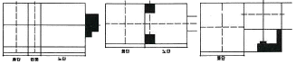
- 란테장 - 알도브란디니장 - 에스테장
- 메디치장(피에졸) - 이솔라벨라 -파르네제장
- 파르네제장 - 란대장 - 에스테장
- 에스테장 - 란테장 - 메디치장(피에졸)
(정답률: 77%)
5. 일본 비조(飛鳥, 아스카)시대와 관련이 가장 먼 것은?
- 노자공
- 모월사
- 수미산석
- 석무대 고분
(정답률: 51%)
6. 개성 만월대(滿月臺)의 조성자와 조성목적으로 옳은 것은?
- 고려 초 왕건이 이궁(離宮)으로 조영
- 고려 초 왕건이 정궁(正宮)으로 조영
- 고려 초 이성계가 이궁(離宮)으로 조영
- 고려 초 왕건이 별서정원(別墅庭苑)으로 조영
(정답률: 57%)
7. 미국 Central Park의 성립배경과 가장 거리가 먼 사람은?
- Calvert Vaux
- Danial Burnham
- William Cullen Bryant
- Adrew Jackson Downing
(정답률: 48%)
8. 덕수궁 석조전 앞의 분수와 연목을 중심으로 정원과 가장 가까운 양식은?
- 독일의 풍경식
- 프랑스의 정형식
- 영국의 절충식
- 이탈리아의 노단건축식
(정답률: 78%)
9. 풍경식 정원의 이론가이며 18C후 ~ 19C초에 걸쳐 풍경식 정원을 완성한 조경가는?
- John Rose
- George London
- Humphrey Repton
- Henry Wisr
(정답률: 82%)
10. 델 엘 바하리(Deir-el Bahari)의 신원에 대한 내용 중 옳지 않은 것은?
- 인공과 자연의 조화
- 직교축에 의한 공간구성
- Punt 보랑(步廊) 석벽의 부조
- 주랑건축 전면에 파진 식재구덩이
(정답률: 59%)
11. 다음은 한국 전통조경 시설물, 혹은 전통수목과 관련 있는 단어들이다. 이 중 다른 3단어와 가장 관련이 없는 것은?
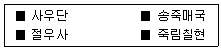
- 사우단
- 송죽매국
- 절우사
- 죽림칠현
(정답률: 69%)
12. 창덕궁 내 천정(泉井)이 아닌 것은?
- 마니(摩尼)
- 몽천(蒙泉)
- 옥정(玉井)
- 파리(玻璃)
(정답률: 59%)
13. 1500년대 초에 만들어진 별서 정원으로 담 아래 구멍을 통해 흘러 들어온 물이 나무 흠대를 거쳐 못을 채우고 다시 넘친 물이 자연스럽게 떨어지도록 꾸며진 곳은?
- 양산보의 소쇄원
- 노수진의 십청정
- 이퇴계의 도산원림
- 윤선도의 부용동 정원
(정답률: 79%)
14. 16세기에 조성된 ‘중국 - 한국 - 일본’의 정원으로 모두 옳은 것은?
- 원명원 - 주합루 - 육의원
- 유원 - 옥호정 - 선동어소
- 창춘원 - 서석지 - 수학원이궁
- 졸정원 - 소쇄원 - 대덕사 대선원
(정답률: 80%)
15. 미국의 조경발달에 획기적인 영향을 미친 시카고 박람회의 영향으로 가장 거리가 먼 것은?
- 도시미화운동의 부흥
- 도시계획 발달의 전기
- 신도시계획 계기 마련
- 건축, 토목 등과 공동작업의 계기
(정답률: 67%)
16. 전통정원 연못에 도입된 섬의 형태가 3도형(三島形)이 아닌 곳은?
- 창경궁 춘당지
- 남원 광한루 원지
- 경주 동궁과 월지
- 경복궁 경회루 원지
(정답률: 50%)
17. 다음 중 동쪽은 청화원, 서쪽은 근춘원으로 나뉘어 있는 중국의 정원은?
- 희춘원
- 기춘원
- 이화원
- 어화원
(정답률: 40%)
18. 고대 메소포타미아인들의 정원에 대한 개념 중 틀린 것은?
- 산악경관을 동경하여 이상화하였다.
- 관개용 수로를 기본적으로 배치햐였다.
- 높은 담으로 둘러싼 뜰 안을 기하학적으로 배치하였다.
- 방형(方形)의 공간에 천국의 4대강을 뜻하는 Paradise 개념의 수로를 배치하였다.
(정답률: 67%)
19. 정원의 조영시기가 오래된 것부터 순서대로 나열된 것은?
- 피에졸레 → 마다마 → 에모 → 브로뷔콩트
- 마다마 → 피에졸레 → 카스텔로 → 로톤다
- 마다마 → 피에졸레 → 로톤다 → 보르뷔콩트
- 란테 → 마다마 → 로톤다 → 베르사유궁전
(정답률: 47%)
20. 리젠트 파크의 영향을 받아 왕실 수렵원을 시민의 힘으로 공공공원으로 조성한 곳은?
- 로마의 포름
- 뉴욕 센트럴 파크
- 영국 버큰헤드 파크
- 뉴욕 프로스팩트 파크
(정답률: 83%)
2과목: 조경계획
21. 다음 주택건설기준 등에 관한 규정상의 주택단지 안의 도로 설명 준 ( )안에 내용이 틀린 것은?
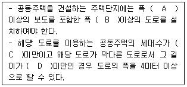
- A : 1.5미터
- B : 7미터
- C : 300세대
- D : 35미터
(정답률: 53%)
22. 다음 「도로」와 관련된 기준으로 틀린 것은?
- 차로의 폭은 차선의 중심선에서 인접한 차선의 중심선까지로 한다.
- 도로의 차로 수는 교통흐름의 형태, 교통량의 시간별ㆍ방향별 분포, 그 밖의 교통 특성 및 지역 여건에 따라 홀수 차로로 할 수 있다.
- 도시지역의 일반도로 중 주간선도로의 설계속도는 60km/시간 이상으로 하여야 한다.
- 도로의 계획목표연도는 공용개시 계획연도를 기준으로 20년 이내로 정한다.
(정답률: 53%)
23. 도시민이 이용할 수 있는 공원녹지를 확충하기 위하여 필요한 경우에는 도시지역의 식생 또는 임상(林床)이 양호한 토지의 소유자와 그 토지를 일반 도시민에게 제공하는 것을 조건으로 해당 토지의 식생 또는 임상의 유지ㆍ보존 및 이용에 필요한 자원을 하는 것을 내용으로 시장이 하는 계약은?
- 녹화계약
- 녹지활용계약
- 토지거랙계약
- 생물다양성관리계약
(정답률: 67%)
24. 야생생물 보호 및 관리에 관한 법률에 대한 사항으로 맞는 것은?
- 환경부장관은 야생생물 보호와 그 서식환경 보전을 위하여 5년마다 멸종위기 야생생물 등에 대한 야생생물 보호 기본계획을 수립하여야 한다.
- 야생생물 그 서식지에서 보전하기 어렵거나 종의 보존 들을 위하여 서식지외에서 보전할 필요가 있는 경우 환경부장관이 단독으로 서식지 외 보전기관을 지정한다.
- 학술연구, 관람ㆍ전시, 유해야생동물의 포획 등 어떠하 경우에도 덫이나 창애, 올무의 제작을 금지한다.
- 멸종위기 야생생물의 중장기 보전대책은 우리나라 야생생물에 대한 보전대책이기 때문에 국제협력에 관한 사항은 포함하지 않아도 된다.
(정답률: 55%)
25. 환경설계에서 연속적 경험의 중요성에 대한 연구와 관련이 없는 사람은?
- 할프린(Halprin)
- 틸(Thiel)
- 맥하그(Mcharg)
- 아버나티(Abernathy)
(정답률: 67%)
26. 1875년 영국에서 불결한 도시주거환경을 제거하기 위해 새로이 건설되는 주택의 상하수도 시설과 정원 크기 및 주변 도로의 폭 등 주거환경기준을 규제하는 목적으로 제정된 법은?
- 건축법(building code)
- 공중위생법(public health act)
- 단지조성법(site planning act)
- 미관지구에 관한 법(law of beautification district)
(정답률: 72%)
27. 국토의 용도 구분 중에서 농림업의 진흥, 자연환경 또는 산림의 보전을 위하여 자연환경보전지역에 준하여 관리할 필요가 있는 지역의 명칭은?
- 도시지역
- 관리지역
- 농림지역
- 산림지역
(정답률: 63%)
28. 계획 및 설계에서 피드백(feed back) 과정을 가장 옳게 설명한 것은?
- 계획에서는 피드백 과정이 필요하나 설계에서는 필요하지 않다.
- 피드백은 계획수행 과정상 전단계로 되돌아가 작성된 안을 다시 한번 검토해 보는 것을 말한다.
- 피드백 과정 시에는 조경가만이 참여하며 의뢰인은 참여하지 않는다.
- 피드백은 자료의 분석 후 이들을 종합하는 과정에서 주로 사용되는 기법이다.
(정답률: 73%)
29. 공원녹지 체계를 설명한 것 중 가장 거리가 먼 것은?
- 체계를 구성하는 요소는 하나의 큰 공원이다.
- 다수의 공원을 연계하여 상호간의 관계를 만든다.
- 가로수나 하천을 공원을 연계요소로 이용한다.
- 호수, 운동장, 광장 등은 공원을 보완하는 점적ㆍ면적요소이다.
(정답률: 63%)
30. 옥상정원의 인공지반을 녹화하 때 가장 우선적이고, 중요하게 고려해야 할 하중은?
- 고정하중
- 적재하중
- 적설하중
- 풍하중
(정답률: 66%)
31. 다음 중 I. McHarg가 주로 사용해 정착된 적지 판정법은?
- DGN method
- overlay method
- motation method
- image map method
(정답률: 77%)
32. 우리나라 중부지방에서 오후 시간대에 태양복사열을 가장 많이 받는 장소는?
- 남 ~ 동향 사이의 20% 경사면
- 남 ~ 서향 사이의 20% 경사면
- 남 ~ 서향 사이의 40% 경사면
- 남 ~ 동향 사이의 40% 경사면
(정답률: 60%)
33. Berlyne의 미적 반응과정을 순서대로 맞게 나열할 것은?
- 환경적 자극 → 자극선택 → 자극해석 → 자극탐구 → 반응
- 환경적 자극 → 자극탐구 → 자극해석 → 자극선택 → 반응
- 환경적 자극 → 자극선택 → 자극탐구 → 자극해석 → 반응
- 환경적 자극 → 자극탐구 → 자극선택 → 자극해석 → 반응
(정답률: 62%)
34. 『체육시설의 설치ㆍ이용에 관한 법률』상 등록체육시설업에 해당하지 않는 것은?
- 골프장업
- 스키장업
- 승마장업
- 자동차 경주장업
(정답률: 55%)
35. 휴양림 지역 내 진입(進入)도로의 종점(終點)에 설치된 주차장으로 부터 휴양림의 주요시설 입구를 순환, 연결하는 기능을 담당하는 도로를 가리키는 용어는?
- 임도
- 목도
- 벌도
- 녹도
(정답률: 71%)
36. 단지 내 보행자 공간의 역할과 가장 거리가 먼 것은?
- 생활공간 제공 역할로 산책, 놀이, 대화 등의 생활공간으로 활용될 수 있다.
- 환경보호적 역할로 보행의 안전과 보안 및 방범효과를 높여준다.
- 경제적 역할로 쾌적한 보행자 공간의 조성을 통해 연도상가의 환경을 개선시킬 수 있다.
- 교통관리 역할로 안락하고 편리한 보행자 공간을 이용하여 보행자들이 목적지까지 편리하게 도달할 수 있게 한다.
(정답률: 55%)
37. 둘 이상의 행정구역에 걸치는 군립공원의 지정ㆍ관리시 협의가 이루어지지 아니한 경우 관계자는 누구에게 재정 신청을 할 수가 있는가?
- 국토교통부장관
- 환경부장관
- 시ㆍ도지사
- 공원관리청장
(정답률: 62%)
38. 고속도로 조경계획 시 가능노선 선정의 고려사항을 도로 이용도와 경제적 측면, 기술적 측면으로 구분할 수 있는데, 다음 중 기술적 측면의 조건에 포함되지 않는 것은?
- 직선도로를 유지 하도록 노선을 선정한다.
- 운수속도(運輸速度)가 가장 빠른 노선을 선정한다.
- 오르막 구배가 너무 급하게 되면 우회노선을 선정한다.
- 토량 이동(절ㆍ성토)이 균형을 이루는 노선을 선정한다.
(정답률: 71%)
39. 단지 계획시 「건페율」의 설명으로 옳은 것은?
- 건축물의 각층 바닥면적의 합계
- 대지면적에 대한 건축면적의 비율
- 대지면적에 대한 건축연면적의 비율
- 객실적 합계의 건축연면적에 대한 비율
(정답률: 62%)
40. 세계 최초로 지정된 국립공원과 한국 최초로 지정된 국립공원이 바르게 짝지어진 것은?
- 요세미티(yosemte) - 오대산
- 요세미티(yosemte) - 속리산
- 옐로우스톤(yellow stone) - 설악산
- 옐로우스톤(yellow stone) - 지리산
(정답률: 78%)
3과목: 조경설계
41. 그림과 같은 투상도는 제 3각법 정투상도이다. 우측면도로 가장 적합한 것은?
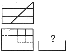
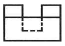
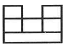
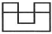
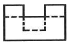
(정답률: 47%)
42. 친환경적 도시시설 중에는 자전거전용도로가 가장 효율적인 시설 중의 하나이다. 다음 중에서 자전거 전용도로 설계 시 양측의 여유를 고려한 1차선 폭은 얼마 이상이어야 하는가? (단, 지역상황 등에 따라 부득이하다고 인정되는 경우는 고려하지 않음.)
- 100 cm
- 120 cm
- 150 cm
- 180 cm
(정답률: 70%)
43. 경계석 설치시 그 기능이 가장 낮은것은?
- 차도와 보도 사이
- 차도와 식재지 사이
- 자연석 디딤돌의 경계부
- 유동성 포장재의 경계부
(정답률: 69%)
44. 물체가 화면에 평행하고 기선에 수직인 경우 1소점 투시도가 되는 투시도의 유형은?
- 유각 투시도
- 사각 투시도
- 눈높이 투시도
- 평행 투시도
(정답률: 65%)
45. 수경시설의 설계기준에 대한 설명 중 틀린 것은?
- 수경시설은 적설, 동결, 바람 들 지역의 기후적 특성을 고려하여 설계한다.
- 물놀이를 전제로 한 수변공간(도섭지 등)시설의 1일 물 순환횟수는 2회를 기준으로 한다.
- 장애물이 없는 개수로의 유량산출은 프란시스의 공식, 바진의 공식을 적용한다.
- 분수의 경우 수조의 너비는 분수 높이의 2배, 바람의 영향을 크게 받는 지역은 분수 높이의 4배를 기준으로 한다.
(정답률: 66%)
46. 기본설계에서 수행되어지는 과정 중 적당하지 않은 것은?
- 평면도
- 조감도
- 시방서
- 스터디모형
(정답률: 66%)
47. 조경설계기준상 토지이용 상충지역 완충녹지의 설계로 옳지 않은 것은?
- 완충녹지의 폭원은 최소 20m를 확보한다.
- 임해매립지의 방풍ㆍ방조녹지대의 폭원은 200 ~ 300m 를 확보한다.
- 재해 발생시의 피난지로서 설치하는 녹지는 교목 식재를 하고, 전체 녹화 면적률이 50% 정도가 되도록 한다.
- 보안, 접근 억제, 상충되는 토지이용의 조절 등을 목적으로 설치하는 녹지는 교목, 관목 또는 잔디, 기타 지피식물을 재식하고 녹화면적률이 80% 이상이 되도록 한다.
(정답률: 67%)
48. K. Lynch 가 주장한 도시경관의 시각적 명료성을 분석하기 위한 5가지 요소에 해당하지 않는 것은?
- 도로(path)
- 지역(distrct)
- 결절점(node)
- 근린주구(neighborhood unit)
(정답률: 78%)
49. 도면 제조 시 치수선에 수치를 쓸 때 방향이 틀린 것은?
- 좌측은 아래에서 위쪽으로
- 우측은 위에서 아래쪽으로
- 상단부는 왼쪽에서 오른쪽으로
- 하단부는 왼쪽에서 오른쪽으로
(정답률: 62%)
50. 다음에서 대칭 균형 원리의 예로 적합하지 않은 것은?
- 독립문
- 낙선재
- 파르테논신전
- 불국사 대웅전
(정답률: 69%)
51. Leopold가 계곡경관의 평가에 사용한 경관가치의 상대적 척도의 계량화 방법은?
- 상대성비
- 연속성비
- 유사성비
- 특이성비
(정답률: 65%)
52. 다음 환경지각 이론 중에서 지원성(affordance)의 지각을 내용으로 하는 이론은?
- 형태심리 이론
- 장(場)의 이론
- 확률적 이론
- 생태적 이론
(정답률: 47%)
53. 가법혼합(Additive mixture)의 3색광에 대한 설명으로 틀린 것은?
- 빨간색광과 녹색광을 흰 스크린에 투영하여 혼합하면 밝은 노랑이 된다.
- 가법혼합은 가산혼합, 가법혼색, 색광혼합 이라고 한다.
- 3색관 모두를 혼합하면 암회색(暗灰色)이 된다.
- 가법혼색의 방법에는 동시가법혼색, 계시가법혼색, 병치가법혼색의 3가지가 있다.
(정답률: 76%)
54. 다음 중 균형과 관계있는 용어로 가장 거리가 먼 것은?
- 대칭
- 비대칭
- 점증
- 주도와 종속
(정답률: 51%)
55. 주택단지ㆍ공공건물ㆍ사적지ㆍ명승지ㆍ호텔 등의 정원에 설치하며, 정원의 아름다움을 밤에 선명하게 보여줌으로써 매력적인 분위기를 연출하는 『정원등』의 세부시설기준으로 틀린 것은?
- 광원은 고압 수은형광등을 적용한다.
- 등주의 높이는 2m 이하로 설계ㆍ선정한다.
- 숲이나 키 큰 식물을 비추고자 할 때에는 아래 방향으로 배광한다.
- 야경의 중심이 되는 대상물의 조명은 주위보다 몇 배 높은 조도기준을 적용하여 중심감을 부여한다.
(정답률: 59%)
56. 시각적 복잡성과 시각적 선호도의 관계를 가장 올바르게 설명한 것은?
- 시각적 복잡성과 시각적 선호도는 아무 관계가 없다.
- 시각적 복잡성이 증가함에 따라 시각적 선호도도 증가한다.
- 시각적 복잡성이 증가함에 따라 시각적 선호도가 감소한다.
- 시각적 복잡성이 적절할 때 가장 높은 시각적 선호도를 나타낸다.
(정답률: 68%)
57. 다음 재료 표시 시호(단면용)에 해당되는 것은?
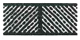
- 지반
- 석재
- 인조석
- 잠석다짐
(정답률: 56%)
58. 다음 중 일반적인 조경설계 과정에 포함되는 사항이 아닌 것은?
- 프로그램 개발
- 조사와 분석
- 개념적인 설계
- 모니터링 설계
(정답률: 50%)
59. 시각적 선호에 관련된 변수에 대한 설명이 틀린 것은?
- 물리적 변수 : 식생, 물, 지형
- 추상적 변수 : 복잡성, 조화성, 새로움
- 지역적 변수 : 위치, 거리, 규모
- 개인적 변수 : 개인의 나이, 학력, 성격
(정답률: 50%)
60. 다음 중 운율미(韻律)美)의 표현과 가장 관계가 먼 것은?
- 변화되는 색채
- 수관의 율동적인 선(線)
- 편평한 벽에 생긴 갈라진 틈
- 일정한 간격을 두고 들려오는 소리
(정답률: 73%)
4과목: 조경식재
61. 도시의 철로 변 식생 중 자연적으로 이입되었을 가능성이 가장 큰 수종은?
- 향나무
- 개나리
- 회양목
- 가죽나무
(정답률: 49%)
62. 야생동물 이동통로 설치 시 고려할 사항이 아닌 것은?
- 주변 생태계와 유사한 식물을 식재하거나 주변지형을 고려한 설치로 주변 서식지 특성과 조화를 이루도록 한다.
- 뚜렷한 보호 대상종이 존재하는 경우, 특정종을 위한 소규모 이동통로를 여러곳에 만드는 것보다 전체 종을 대상으로 대규모 이동통로를 만드는 것이 경제적으로 바람직하다.
- 차량에 의한 동물피해를 최소화하기 위한 수단으로써 과속방지턱, 노면처리, 동물 출현 표지판 등의 보조시설을 설치할 수 있다.
- 인접도로에서 발생하는 소음 및 진동, 자동차 혹은 기타 건물의 불빛 등의 외부간섭을 차단하기 위해 통로를 은폐하는 것이 바람직하다.
(정답률: 67%)
63. 잎보다 꽃이 먼저 피는 수종은?
- Magnolia sieboldii
- Magnolia denudata
- Magnolia obouata
- Hibiscus syriacus
(정답률: 57%)
64. 학교조경 설계 시 식물재료의 선정조건으로 가장 부적합한 것은?
- 교과서에 취급된 수종
- 주변환경에 내성이 강한 수종
- 그 학교를 상징할 수 있는 수종
- 잎이나 꽃이 아름다운 외국 수종
(정답률: 75%)
65. 수피에 코르크가 발달하는 수목이 아닌 것은?
- Quercus variabilis
- Prunus mandshurica
- Phellodendron amurense
- Aphananthe aspera
(정답률: 45%)
66. 열매는 이과로 타원형이며 반점이 뚜렷하고 지름이 1cm 로 붉은색으로 익으며 9월 중순 ~ 10월 초에 성숙하는 수종은?
- Morus alba
- Sorbus alnifolia
- Albizia julibrissin
- Ligustrum obtusifolium
(정답률: 44%)
67. 수목의 수형을 결정하는 요인으로 가장 거리가 먼 것은?
- 바람
- 관수량
- 인간의 영향(접촉)
- 태양광의 입사각
(정답률: 60%)
68. 다음 중 쪽동백나무(Styrax obassia Siebold & Zucc)의 특징 설명으로 틀린 것은?
- 꽃은 흰색으로 5 ~ 6월에 개화한다.
- 나무껍질은 검은색이며, 굴곡이 생기고 매끈하다.
- 생장속도는 빠르며, 이식이 잘 되지 않아 실생번식을 주로 한다.
- 원뿔모양의 수형과 특생 있는 줄기, 아름다운 꽃, 귀여운 열매는 관상가치가 크다.
(정답률: 53%)
69. 천이(Succession)의 순서가 옳은 것은?
- 나지 → 1년생초본 → 다년생초본 → 음수교목림 → 양수관목림 → 양수교목림
- 나지 → 1년생초본 → 다년생초본 → 양수교목림 → 양수관목림 → 음수교목림
- 나지 → 1년생초본 → 다년생초본 → 양수관목림 → 양수교목림 → 음수교목림
- 나지 → 다년생초본 → 1년생초본 → 양수관목림 → 양수교목림 → 음수교목림
(정답률: 69%)
70. 수분 요구도별 식물의 설명으로 틀린 것은?
- 건생식물은 증산작용을 억제하기 위해 잎의 표피조직이 주껍게 발달되며, 세덤(Seduum)속이 해당된다.
- 부엽식물은 뿌리가 물 밑 땅속에 고착하고 잎은 수면에 띄우며, 연꽃이 해당된다.
- 습생식물은 주로 토양이 축축한 습지에서 생활하며, 바위솔이 해당된다.
- 침수식물은 뿌리가 수면 하에 있으며, 이삭물수세미가 해당된다.
(정답률: 51%)
71. 식재시방서의 식재구덩이에 관한 설명으로 틀린 것은?
- 식재구덩이는 식재 당일에 굴착하는 것을 원칙으로 한다.
- 지정된 장소가 식재 불가능할 경우 도급업자가 임의로 옳겨 심는다.
- 식재 구덩이를 팔 때에는 표토와 심토는 따로 갈라놓아 표토를 활용할 수 있도록 조치한다.
- 대형목 등 특수목 식재를 위한 구덩이의 굴착방법은 공사시방서에 따른다.
(정답률: 73%)
72. 다음 양버들(Populus nigra var. italica Koehne) 에 관한 설명으로 틀린 것은?
- 버드나무과 수종이다.
- 수형은 원주형으로 빗자루처럼 좁은 형태이다.
- 성상은 낙엽활엽교목이고 뿌리는 천근성이다.
- 가을에 붉은 단풍이 아름다운 우리나라 자생수종이다.
(정답률: 68%)
73. 식생과 관련된 설명으로 틀린 것은?
- 어떤 군락을 특징할 수 있는 종군을 표징종(character species)이라 한다.
- 인간에 의한 영향을 받지 않은 식생을 대상식생(substitite vegetation)이라 한다.
- 군집 속에서 아군집을 구분하기 위해 양적으로 우점하고 있는 종을 식별종(differences species)으로 삼는다.
- 변화해 버린 입지 조건하에서 인간의 의한 영향이 제거되었다고 할 때 성립이 예상되는 자연식생을 현재의 잠재자연식생(potenital natural vegetation)이라 한다.
(정답률: 71%)
74. 식재의 공학적 이용 효과가 아닌 것은?
- 음향 조절
- 차단 및 은폐
- 토양 침식 조절
- 섬광 및 반사 조절
(정답률: 62%)
75. 다음 설명하는 식물은?
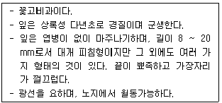
- 바위취
- 프리뮬러
- 삼지구엽초
- 지면패랭이꽃
(정답률: 61%)
76. 수종과 학명(學名)의 연결이 틀린 것은? (문제 오류로 실제 시험에서는 3, 4번이 정답처리 되었습니다. 여기서는 3번을 누르면 정답 처리 됩니다.)
- 주목 : Taxus xuspidata
- 잣나무 : Pinus koraiensis
- 가문비나무 : Picea abies
- 백송 : Pinus banksiana
(정답률: 67%)
77. 고속도로 사고방지 기능의 식재방법에 속하지 않는 것은?
- 차광식재
- 지표식재
- 완충식재
- 명암순응식재
(정답률: 68%)
78. 수목검사 시 다음 설명 중 ( )안에 적합한 수목 규격의 허용범위는?
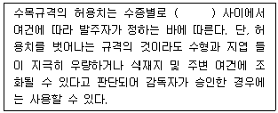
- -5 ~ -0%
- -10 ~ -5%
- -15 ~ -10%
- -25 ~ -15%
(정답률: 67%)
79. 백목련을 접목으로 증식시키고자 할 때 대목으로 가장 좋은 것은?
- 일본백목련
- 목련
- 자목련
- 함박꽃나무
(정답률: 60%)
80. 광 보상점(light compensation point)이 가장 낮은 식물은?
- 주목
- 소나무
- 버드나무
- 자작나무
(정답률: 59%)
5과목: 조경시공구조학
81. 배수계획에서 유출량과 강우량과의 비율을 무엇이라고 하는가?
- 강우강도
- 강우계속기간
- 수문통계
- 유출계수
(정답률: 63%)
82. 시방서의 작성요령에 대한 설명으로 틀린 것은?
- 재료의 품목을 명확하게 규정한다.
- 표준시방서는 공사시방서를 기본으로 작성한다.
- 설계도면의 내용이 불충분한 부분은 보충 설명한다.
- 설계도면과 시방서의 내용이 상이하지 않도록 한다.
(정답률: 70%)
83. 목재의 특징으로 가장 거리가 먼 것은?
- 건조변형이 적다.
- 열전도율이 낮다.
- 비중이 작은 반면 압축강도가 크다.
- 생산 사이클이 짧아 친환경성이 높다.
(정답률: 53%)
84. 등고선의 성질 줄 틀린 것은?
- 도상간격이 넓으면 완경사이다.
- 등고선은 급경사면에서는 서로 겹친다.
- 등고선은 도면 안 또는 밖에서 반드시 폐합한다.
- 등고선의 도상간격은 동일한 경사면에서 등거리이다.
(정답률: 64%)
85. 지름 15cm, 높이 30cm인 콘크리트 원주공시체를 압축강도 시험하였더니 45ton에서 파괴되었다. 이때의 압축강도(kgf/cm2)는 약 얼마인가?
- 58
- 106
- 176
- 254
(정답률: 36%)
86. 아스팔트로 포장된 폭(幅)이 5m 되는 차도에서 횡단구배를 4% 유지해야 한다면, 도로의 노정(路頂)과 노단(路端)의 수직적인 높이 차이는?
- 0.⑤ m
- 0.10 m
- 1.25 m
- 2.50 m
(정답률: 50%)
87. 심토층 배수와 관련된 설명 중 옳지 않은 것은?
- 잔디지역에서는 10%의 경사를 유지하는 것이 바람직하다.
- 유속이 1.3m/sec 이하로 떨어지면 침적물이 발생하고 관로가 막힌다.
- 심토층 유출은 지표면배수나 지하배수관 배수와 달리 유출속도가 매우 느리고 예측이 어려운 경우가 많다.
- 강우량, 심토층 유출량, 토양조건 등을 고려하여 매닝공식과 연속방정식을 이용하여 심토층 계획 유출량을 계산한다.
(정답률: 58%)
88. 에폭시수지 도료에 관한 일반사항 중 틀린 것은?
- 열에 강하다
- 금속고무 등에도 접착이 잘 된다.
- 여러 가지 충전재와는 혼합사용 할 수 있다.
- 내수성(耐水性)과 내약품성(耐藥品性)이 나쁘다.
(정답률: 66%)
89. 그림과 같은 보에서 지점 A지점 반력의 크기는 몇 kN인가?
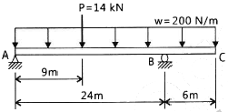
- 9
- 11
- 13
- 15
(정답률: 37%)
90. 철근콘크리트 구조로서 단면적의 형태를 퓌하여 구조체의 부피가 상대적으로 적어 자중이 줄어든 만큼 옹벽 배면의 기초 저판위의 흙의 무게를 보강하여 안정성을 높인 옹벽의 형태는?
- 중력식
- 캔틸레버식
- 부축벽식
- 조립식
(정답률: 65%)
91. 2m의 터파기 공사에서 적용하는 일반적인 흙의 휴식각(안식각)은 얼마인가?
- 0°
- 10°
- 20°
- 30°
(정답률: 53%)
92. 하수도시설 기준에서 오수관거 계획시 고려사항으로 틀린 것은?
- 오수관거와 우수관거가 교차하여 역사이펀을 피할 수 없는 경우에는 오수관거를 역사이펀으로 하는 것이 바람직하다.
- 관거는 원칙적으로 개거로 하며, 수밀한 구조로 하여야 한다.
- 관거배치는 지형, 지질, 도로폭 및 지하매설물 등을 고려하여 정한다.
- 분류식과 합류식이 공존하는 경우에는 원칙적으로 양 지역의 관거는 분리하여 계획한다.
(정답률: 45%)
93. 축척 1/300 도면을 구적기(Planimeter)의 축척 1/600로 맞추고 측정 하였더니 1246m2가 되었다. 실제적인 면적은 얼마인가?
- 311.5m2
- 623m2
- 2492m2
- 4984m2
(정답률: 42%)
94. 가설시설물과 관련된 내용 중 틀린 것은?
- 가설시설물의 설치규모는 공사기간과 공사규모에 따라 다르다.
- 시멘트 보관창고는 대향이 아닌 때에는 작업장의 일부를 구획하여 사용한다.
- 판자 울타리의 높이는 공사시방서에서 정하는 바가 없을 때에는 1.2m 이상으로 한다.
- 공사에 지장이 없는 공사장 내의 일정장소에 감독자의 지시에 따라 수목가식장소 또는 임시보관 장소를 설치한다.
(정답률: 61%)
95. 기본벽돌을 사용하여 0.5B의 두께로 길이 5m, 높이 2m의 담을 쌓으려 할 때 필요한 벽돌량(정미량)은?
- 약 415장
- 약 650장
- 약 750장
- 약 1299장
(정답률: 50%)
96. 다음의 네트워크 공기 45일의 공사공정도이다. 공기를 5일간 단축할 경우 맞는 것은?
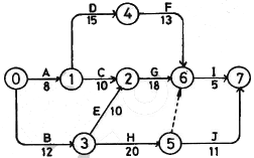
- B작업 : 2일, E작업 : 2일, I작업 : 1일
- B작업 : 1일, G작업 : 2일, I작업 : 2일
- B작업 : 2일, E작업 : 1일, I작업 : 2일
- B작업 : 3일, E작업 : 1일, I작업 : 1일
(정답률: 38%)
97. 자연상태의 모래질흙 1500m3를 6m3 적재 덤프트럭으로 운반하여, 성토하여 다지고자 한다. 트럭의 총 소요대수와 다짐 성토량은 각각 얼마인가? (단, 모래질흙의 토양환산계수는 L = 1.2, C = 0.9 이다.)
- 250대, 1350m3
- 250대, 1620m3
- 300대, 1350m3
- 300대, 1620m3
(정답률: 48%)
98. 토양 조사 분석에서 물리적 특성 분석에 해당 되지 않는 것은?
- 입도
- 투수성
- 유효수분
- 유기물 함량
(정답률: 55%)
99. 목재 방부법으로 가장 거리가 먼 것은?
- 표면 탄화법
- 습식법
- 약제 주입법
- 약제 도포법
(정답률: 61%)
100. 공사의 도급금액 결정방식 중 총액도급에 관한 설명으로 옳은 것은?
- 공사의 공정관리 수행이 용이하다.
- 입찰 전까지의 소요기간이 적게 든다.
- 공사비 절감과 원가관리가 용이하다.
- 설계변경에 따른 수량증감과 공사비의 산정이 용이하다.
(정답률: 44%)
6과목: 조경관리론
101. 다음 설명하는 비료 형태는?
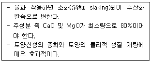
- 생석회
- 황산석회
- 황산암모늄
- 질산암모늄
(정답률: 66%)
102. 침투성 살충제의 작용특성에 대한 설명으로 가장 옳은 것은?
- 주로 섭식성 해충의 피부에 접촉, 흡수되어 살충력을 나타낸다.
- 살포 즉시 강력한 살충력을 나타내며 잔효성이 매우 짧은 편이다.
- 즙액을 빨아먹는 흡즙해충에 특히 우수한 살충력을 나타낸다.
- 우수한 살충효과를 얻기 위해서는 작물체 표면에 균일하게 살포되어야 한다.
(정답률: 55%)
103. 수목의 외과수술 시 동공 충진 재료로 가장 적합한 것은?
- 바셀린
- 라놀린
- 폴리우레탄폼
- 발코트
(정답률: 67%)
104. 생태연못의 유지관리 사항으로 옳지 않은 것은?
- 모니터링은 최소 조성 10년 후부처 3개년 주기로 실시한다.
- 모니터링은 가급적 지역주민, NGO, 전문가 등이 함께 참여하도록 한다.
- 물순환시스템이 지속적으로 유지될 수 있도록 유입구와 유출구를 주기적으로 청소한다.
- 습지식물이 지나치게 번성하였을 경우에는 부수식물이 차지하는 면적이 수면저의 1/3이하가 되도록 식물 하단부(뿌리부근)에 차단막을 설치하거나 수시로 제거해 준다.
(정답률: 65%)
1⑤. 잔디관리 항목 중 배토(Topdressing)를 잘못 설명한 것은?
- 배토작업시 부정근이 감소한다.
- 답압 및 동해에 의한 잔디피해를 최소화한다.
- 잔디면의 요철을 방지하여 잔디깍기 효과를 높인다.
- 지하경과 토양의 분리를 막으며 내한성을 증대시킨다.
(정답률: 52%)
106. 나무주사 방법에 대한 설명으로 옳지 않은 것은?
- 여름철 소나무류에는 주로 중력식 주사를 사용한다.
- 형성층 안쪽의 목부까지 구멍을 뚫고 약제를 넣어야 한다.
- 모젯(Mauget) 수간주사기는 압력식 주사이다.
- 중력식 주사는 약액의 농도가 낮거나 부피가 클 때 사용한다.
(정답률: 43%)
107. 실외놀이 및 휴게시설 제작용 재료 중 성형이 용이한 반면 마모되기 쉽고 자외선, 온도의 변화에 의해 퇴색되거나 가장 휘기 쉬운 것은?
- 철재
- 합성수지재
- 목재
- 콘크리트재
(정답률: 69%)
108. 식물병의 주요한 표징 중 영양기관에 의한 것은?
- 포자(胞子)
- 균핵(菌核)
- 자낭각(子囊殼)
- 분생자병((分生子炳)
(정답률: 49%)
109. 참나무류에 치명적인 피해를 주는 참나무 시들음병을 매개하는 곤충은?
- 광릉긴나무좀
- 솔수염하늘소
- 참나무재주나방
- 도토리거위벌레
(정답률: 63%)
110. 다음 조경공간의 지주목 및 지주세우기 등에 관한 설명으로 옳은 것은?
- 인공지기반에 식재하는 수고 2.0m 이상의 수목은 바람의 피해를 고려하여 지지시설을 하여야 한다.
- 대나무 지주의 경우에는 선단부를 고정하고 결속부에는 대나무에 흠집이 발생하지 않도록 유의한다.
- 삼각형지주 등은 수간, 주간 및 기타 통나무와 교착하는 부위에 2곳 이상 결속한다.
- 준공 후 2년이 경과되었을 때 지주목의 재결속을 1회 실시함을 원칙으로 하되 자연재해에 의한 훼손시는 복구계획을 수립하여 보수한다.
(정답률: 40%)
111. 공원의 이용자관리에 대한 설명으로 옳지 않은 것은?
- 대상지의 보전이란 차원에서 이용자의 행위를 규제할 수 있다.
- 적정한 이용이 되도록 지도감독 하는 것도 이용자관리 업무이다.
- 다양한 계층의 이용자 필요에 대응하여 유연하게 운영해야 한다.
- 이용자 관리의 대상은 현재 공원을 이용하는 사람과 이용경험이 있는 사람에 한한다.
(정답률: 68%)
112. 페니트로티온 50% 유제 50cc 를 페니트로티온 농도 0.5%로 희석하려고 할 경우 요구되는 물의 양은? (단, 원액의 비중은 1 이다.)
- 4500 cc
- 4950 cc
- 5500 cc
- 6000 cc
(정답률: 54%)
113. 이식한 나무의 활착율을 높이기 위하여 실시하는 방법으로 가장 거리가 먼 것은?
- 잎에 수분증산억제제를 뿌린다.
- 뿌리에 항시 고일 정도로 물을 공급해 준다.
- 하절기 잎이 무성한 수목 식재시 가지치기를 실시한다.
- 구덩이에서 나온 흙을 부관 후 하층토를 제외하고 다시 구덩이 채우기를 한다.
(정답률: 60%)
114. 증기압이 높은 농약의 원제를 액상, 고상 또는 압축가스 상으로 용기 내에 충전하여 용기를 열 때 유효성분이 대기 중으로 기화하여 병해충을 방제하도록 설계된 제형은?
- 훈증제
- 분의제
- 연무제
- 훈연제
(정답률: 57%)
115. 다음 중 일반적으로 전정을 하지 않는 수종은?
- 소나무
- 회양목
- 향나무
- 금송
(정답률: 50%)
116. 다음 중 쥐똥밀깍지벌레와 관련된 설명으로 틀린 것은?
- 연 2회 발생하며 알로 월동한다.
- 가해수종의 가지에 기생하여 흡즙 가해하므로 수세가 약화된다.
- 가해수종으로는 쥐똥나무, 물푸레나무, 이팝나무 등이 있다.
- 수컷은 나뭇가지에 모여 살며 백색으 밀랍을 분비하기 때문에 피해를 발견하기 쉽다.
(정답률: 49%)
117. 토양의 pH 변화를 억제하는 토양의 성질을 무엇이라고 하는가?
- 완충작용
- 길항작용
- 흡착장용
- 공생작용
(정답률: 47%)
118. 청소작업의 할당에 있어서 개인에게 지정된 지역의 청소책임을 지우는 방법의 장점이 아닌 것은?
- 협동심과 책임감이 증진된다.
- 작업진행에 대한 정리가 쉽고, 성취욕이 강해진다.
- 작업불량, 파손, 기타 사고에 대한 책임이 명확하다.
- 여러 가지 임무를 수행하므로 단조로움이 덜하다.
(정답률: 51%)
119. 안전사고 발생시 사고처리 요령 중 가장 먼저 해야 할 일은?
- 사고자의 구호
- 관계자에게 통보
- 사고책임의 명확화
- 사고 상황의 파악ㆍ기록
(정답률: 70%)
120. 레크레이션(Recreation) 이용의 강도와 특성의 조절을 위한 관리기법 중 직접적 이용제한 방법이 아닌 것은?
- 예약제의 도입
- 이용시간의 제한
- 구역감시의 강화
- 비이용지역으로의 접근성 제고
(정답률: 54%)